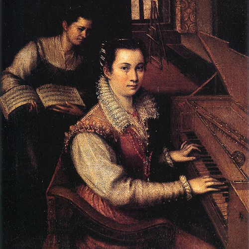
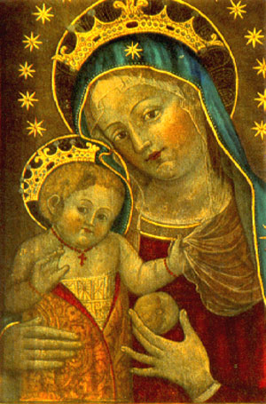

XV secolo
Caterina Vigri
1413–1463
Monaca, miniatrice e pittrice del primo Rinascimento italiano.
Apri la schedaIndice completo delle 81 artiste presenti nell’elenco. Puoi cercare per nome oppure filtrare per secolo.
XV secolo
1413–1463
Monaca, miniatrice e pittrice del primo Rinascimento italiano.
Apri la schedaXV secolo
1446–1491
Pittrice fiorentina, figlia di Paolo Uccello, tra le rare artiste documentate del Quattrocento.
Apri la scheda
XV secolo
1482–1548
Miniatrice e monaca domenicana, nota per manoscritti miniati religiosi.
Apri la scheda
XV secolo
1490–1530
Scultrice bolognese del Rinascimento, celebre per intagli e rilievi.
Apri la scheda
XVI secolo
1524–1588
Suora pittrice e prima artista donna ricordata da Vasari.
Apri la scheda
XVI secolo
1531–1626
Grande ritrattista del Rinascimento, attiva anche alla corte di Spagna.
Apri la scheda
XVI secolo
1547–1612
Incisora del Cinquecento, nota anche come Diana Scultori.
Apri la scheda
XVI secolo
1552–1614
Pittrice manierista bolognese, tra le prime professioniste affermate.
Apri la schedaXVI secolo
1552–1638
Pittrice ravennate specializzata in soggetti sacri e ritratti.
Apri la scheda
XVI secolo
1578–1630
Pittrice milanese nota per nature morte e raffinati ritratti.
Apri la scheda
XVI secolo
1593–1653
Protagonista del Barocco italiano, celebre per energia narrativa e figure femminili forti.
Apri la schedaXVI secolo
1594–1657
Pittrice fiamminga tra le maggiori specialiste della natura morta.
Apri la scheda
XVI secolo
1600–1670
Pittrice barocca famosa per miniature, nature morte e botanica.
Apri la scheda
XVII secolo
1616–1705
Pittrice e architetta romana del Seicento, figura eccezionale per la sua epoca.
Apri la schedaXVII secolo
1633–1699
Ritrattista inglese, tra le prime artiste professioniste in Inghilterra.
Apri la schedaXVII secolo
1638–1665
Pittrice bolognese barocca, fondò una scuola frequentata anche da donne.
Apri la schedaXVII secolo
1673–1757
Maestra del pastello e del ritratto rococò veneziano.
Apri la scheda
XVII secolo
1687–1738
Pittrice fiorentina di soggetti naturalistici e floreali, attiva nel Settecento.
Apri la schedaXVIII secolo
1741–1807
Pittrice neoclassica di fama europea, tra i fondatori della Royal Academy.
Apri la scheda
XVIII secolo
1749–1803
Ritrattista francese del Settecento e sostenitrice della formazione artistica femminile.
Apri la scheda
XVIII secolo
1755–1842
Celebre ritrattista della corte di Maria Antonietta.
Apri la scheda
XVIII secolo
1768–1826
Pittrice neoclassica francese, nota per ritratti intensi e moderni.
Apri la scheda
XIX secolo
1818–1911
Pittrice italiana dell’Ottocento, apprezzata per vedute e paesaggi.
Apri la scheda
XIX secolo
1822–1899
Pittrice realista francese, celebre per animali e scene rurali.
Apri la schedaXIX secolo
1825–1909
Scultrice francese impegnata anche nell’accesso delle donne alle accademie.
Apri la scheda
XIX secolo
1841–1895
Tra le fondatrici dell’Impressionismo, con pittura luminosa e intima.
Apri la scheda

XIX secolo
1846–1933
Pittrice britannica famosa per scene militari e storiche.
Apri la scheda
XIX secolo
1849–1883
Pittrice francese vicina agli impressionisti e allieva di Manet.
Apri la scheda
XIX secolo
1855–1927
Pittrice austro-britannica tra realismo, simbolismo e temi medievali.
Apri la scheda
XIX secolo
1860–1938
Artista russa d’avanguardia, legata all’espressionismo.
Apri la scheda
XIX secolo
1864–1943
Scultrice francese di straordinaria forza espressiva.
Apri la scheda
XIX secolo
1864–1933
Artista e designer del Glasgow Style, vicina all’Art Nouveau.
Apri la scheda
XIX secolo
1865–1938
Pittrice francese post-impressionista, già modella degli artisti di Montmartre.
Apri la scheda
XIX secolo
1867–1923
Pittrice italiana attiva a Parigi, vicina al simbolismo.
Apri la scheda
XIX secolo
1872–1938
Pittrice svizzera d’avanguardia, tra cubismo e sperimentazione tessile.
Apri la schedaXIX secolo
1873–1921
Artista scozzese del Glasgow Style, legata a simbolismo e design.
Apri la scheda
XIX secolo
1877–1962
Pittrice espressionista del gruppo del Blaue Reiter.
Apri la schedaXIX secolo
1881–1962
Artista russa d’avanguardia tra cubo-futurismo e scenografia.
Apri la schedaXIX secolo
1882–1968
Pittrice spagnola attiva tra accademismo e modernità.
Apri la scheda

XIX secolo
1886–1965
Pittrice americana nota per paesaggi e scene di viaggio.
Apri la scheda

XIX secolo
1893–1983
Designer Bauhaus, celebre per oggetti in metallo e design funzionale.
Apri la scheda

XIX secolo
1897–1983
Designer tessile del Bauhaus, innovatrice nella tessitura moderna.
Apri la scheda
XIX secolo
1898–1980
Pittrice Art Déco famosa per ritratti eleganti e geometrici.
Apri la scheda

XIX secolo
1899–1990
Ceramista e designer legata al Bauhaus e alla ceramica moderna.
Apri la scheda

XX secolo
1903–2000
Fotografa e designer Bauhaus, nota per autoritratti sperimentali.
Apri la scheda
XX secolo
1907–1954
Pittrice messicana celebre per autoritratti e temi identitari.
Apri la schedaXX secolo
1908–1984
Pittrice dell’espressionismo astratto, protagonista della scuola di New York.
Apri la schedaXX secolo
1910–2012
Artista surrealista tra pittura, scrittura e installazione.
Apri la scheda
XX secolo
1911–2010
Scultrice contemporanea nota per opere su memoria e corpo.
Apri la scheda
XX secolo
1913–1985
Artista surrealista svizzera famosa per oggetti poetici e stranianti.
Apri la schedaXX secolo
1917–2011
Pittrice e scrittrice surrealista dal linguaggio visionario.
Apri la scheda
XX secolo
1919–2013
Artista sarda che unisce arte, mito, tessitura e relazione sociale.
Apri la scheda
XX secolo
1921–2023
Pittrice francese del Novecento, autonoma e originale.
Apri la schedaXX secolo
1929
Artista giapponese contemporanea famosa per pois e installazioni immersive.
Apri la scheda
XX secolo
1930–2002
Artista franco-americana nota per le coloratissime Nanas.
Apri la scheda
XX secolo
1931
Pittrice britannica tra le principali esponenti dell’Op Art.
Apri la scheda
XX secolo
1938–1976
Artista concettuale italiana, centrale nella poesia visiva.
Apri la scheda

XX secolo
1944–2024
Artista tedesca di installazioni, macchine poetiche e performance.
Apri la schedaXX secolo
1950
Artista concettuale nota per testi luminosi e proiezioni urbane.
Apri la schedaXX secolo
1953
Artista francese che intreccia fotografia, testo e investigazione.
Apri la schedaXX secolo
1953
Pittrice contemporanea nota per figure intense e psicologiche.
Apri la scheda
XX secolo
1954
Fotografa e artista concettuale, celebre per identità messe in scena.
Apri la schedaXX secolo
1957
Artista iraniana contemporanea tra fotografia, video e politica.
Apri la schedaXX secolo
1958–1981
Fotografa americana nota per immagini intime e sperimentali.
Apri la schedaXX secolo
1963
Artista britannica che usa autobiografia, testo e installazione.
Apri la scheda
XX secolo
1967
Artista e regista britannica, già nota come Sam Taylor-Wood.
Apri la schedaXX secolo
1969
Artista italiana nota per performance con gruppi di figure umane.
Apri la scheda


XX secolo
1989
Artista e giornalista curda, attiva tra arte e diritti civili.
Apri la scheda